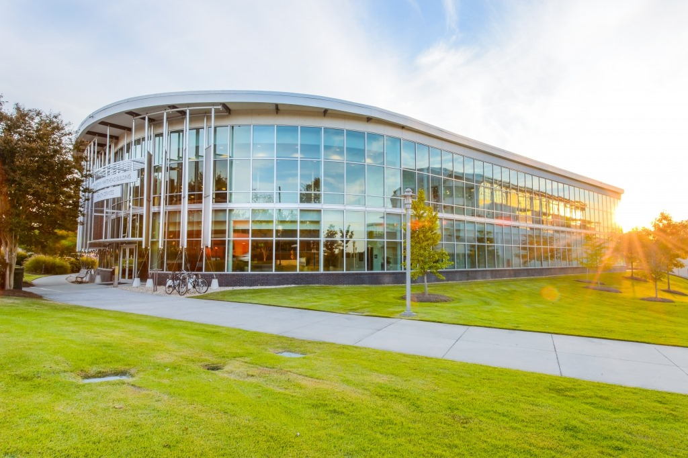

Building History
1921 Whitehead Memorial Hospital photo, from the Bulletin of the Georgia School of Technology (public domain).

First completed in 1911, Stamps Wellness Center has been an important part of campus for over a century. Georgia Tech saw the need to create this facility after lack of available healthcare led to the death of a student in 1909. Constructed as the Joseph B. Whitehead Hospital, it was originally overseen by a doctor who was simultaneously running his own private practice. This led him to hire an Emory medical student to handle the day to day operations of the center, one Edward Roe Stamps III. Eventually, over the next 100 years, this operation would expand, becoming the 40,000 sq. ft. Stamps Health Services facility, with the Joseph B. Whitehead building at its center.
Stamps is dedicated to providing healthcare to the students and employees of Georgia Tech. At the state of the art building, finished in 2003, students can get free primary care and women’s health visits just by booking an appointment. Stamps also provides other services, such as flu shots and tobacco cessation programs, to support student wellness.